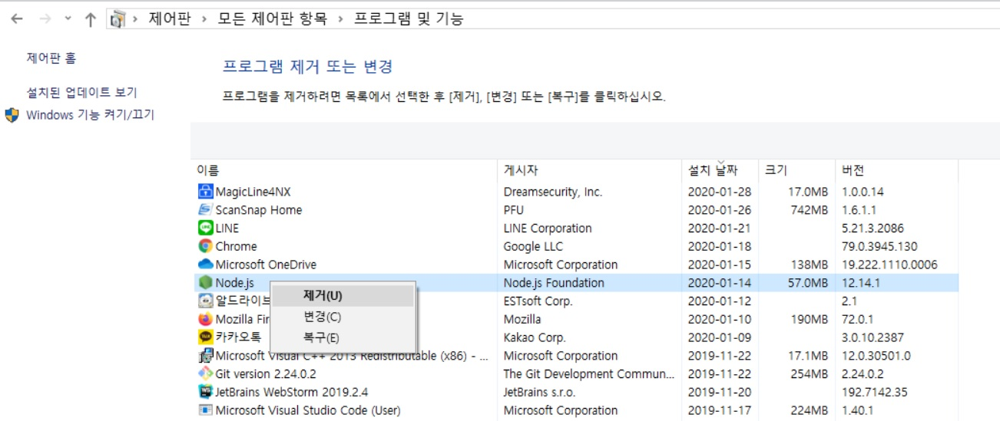
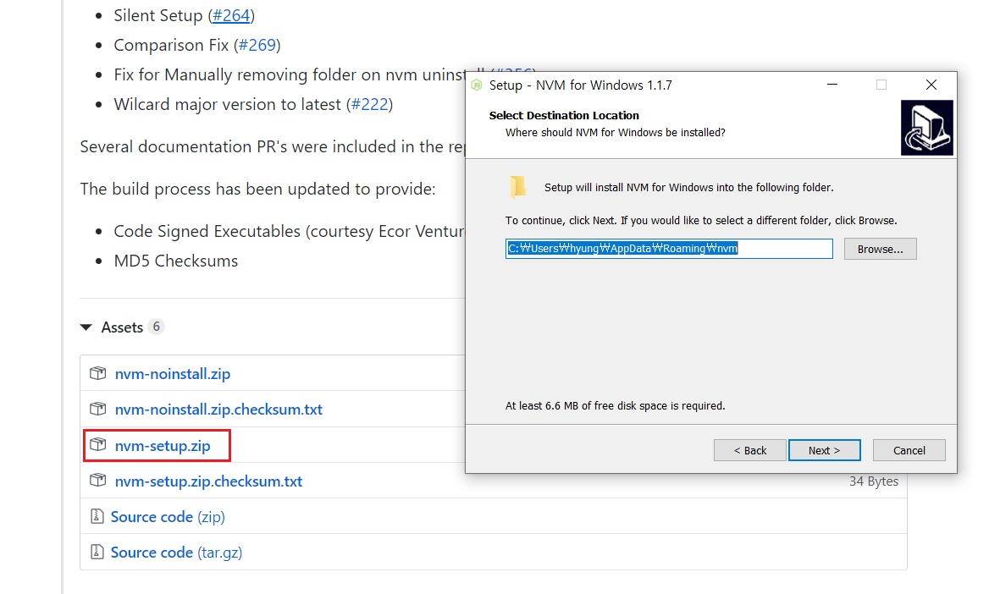
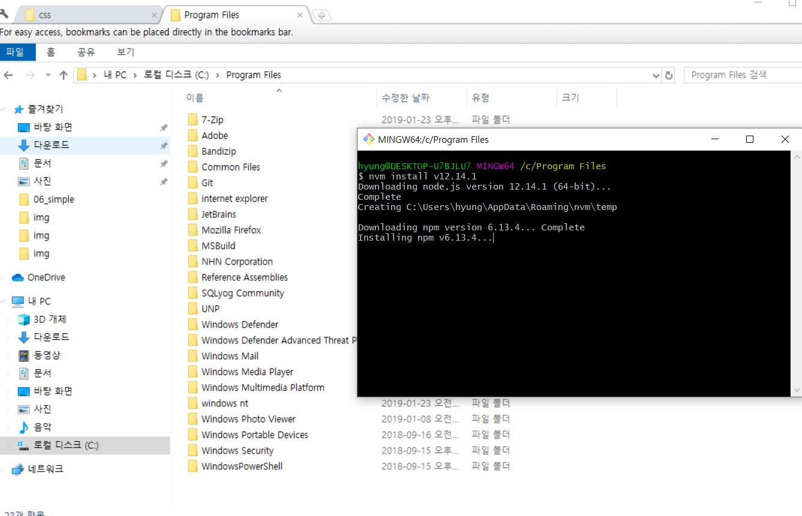
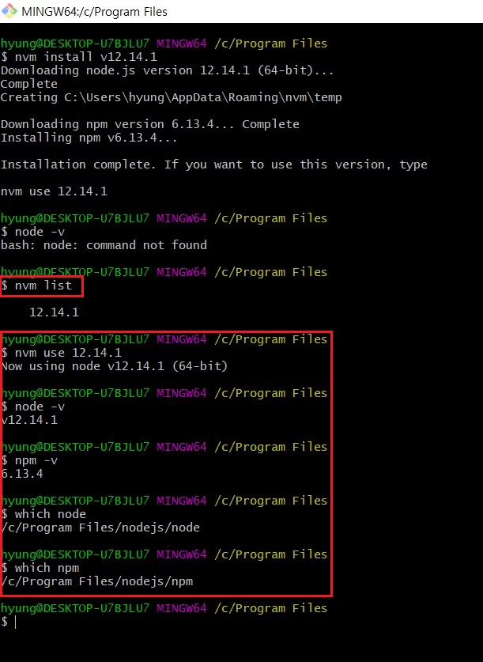

Node 버전관리 NVM
- Node 버전관리 NVM
-
업무를 진행하다보면 여러 Node 버전이 필요할 때가 있습니다.
각 작업자마다 Node 버전을 달리해 작업을 했기 때문입니다.
어떤 작업물은 오래되어 Node 버전 8점대에서 작업했을 수도 있고, 어떤 작업물은 최신일 수도 있습니다.
그러면 그 환경과 일치시켜 Node 버전을 맞춰야 오류를 최소화 시킬 수 있을 것입니다.
물론 꾸준히 최신 버전에 맞춰 소스를 업데이트 해주는 것이 베스트겠지만 모든 상황이 그럴 수는 없습니다.
- 주의사항 (원인 파악중)
-
회사컴퓨터에서 시도했지만 실패했습니다.
그 이유를 조사했을 때는 권한 문제라고 나왔는데요,
nvm을 설치할 때 우클릭 > 관리자 권한 실행으로 설치해야됩니다. (저희 집 노트북은 안 그래도 잘 됐습니다.)
만약 관리자권한으로 설치 안하시고 그냥 설치하신다면, access is denied 와 invalid arguments 와 같은 오류가 발생할지도 모릅니다.
이렇게 설치하면 nvm 명령어가 cmd 창에서는 읽힙니다. (기타 터미널 창에선 안읽힙니다.)
하지만 nvm install 명령어로 노드 버전들을 설치하고 nvm use로 해당 노드 버전을 선택해도 제대로 선택이 안됩니다.
추론 가능한 원인은 nodejs 폴더가 program files 안에 있기 때문인데요,
해당 경로에 접근 권한이 없어서 그럴지도 모른다고 나왔습니다.
그래서 program files 경로 안에 설치하지 말고 바깥에 nodejs를 설치하면 이 문제가 해결된다고 합니다.
하지만 아직 그렇게는 시도안해봤습니다.
그 이유는 재부팅하면 환경변수(내컴퓨터 > 시스템 환경변수 설정)가 다시 재설정될 수도 있다고 그랬기 때문입니다.
아직 재부팅 테스트는 못했습니다. (회사컴이 현재 종료하면 업데이트 된다고하여 7시 이후에 해볼 생각입니다.)
여튼 재부팅했는데도 해결이 안되면, program files 바깥으로 빼보도록 하겠습니다.
그렇게하면 c://users/사용자이름/appdata/roaming/nvm/settings.txt 파일 확인 필수! (물론 알아서 다시 재설정 되겠지만..)
그리고 ruby와 연결되어있는 이슈 같은데, cmd 창에서만 읽히는 문제도 아마 이런 권한 문제인 거 같아요.
cmd 창을 제외한 다른 터미널 창에서는 nvm 그리고 ruby 를 설치했어도 읽지를 못하는데, 아마 cmd 창만 권한이 있는 것 같습니다.
이 또한 제 노트북에선 발생하지 않은 이슈였는데, 회사컴에서는 이러한 이슈가 발생합니다.
nvm install v10.16.3 이란 명령어로 설치하면 아래 프로그램 제거 또는 변경에 node.js 프로그램이 뜨질 않았습니다.
아래 스크린샷은 nvm install v10.16.3으로 설치한게 아닌, 설치 프로그램으로 설치한 후의 모습입니다.
nvm use 명령어로 다른 버전의 노드로 바꾸려했으나 안바뀝니다.
재부팅도 해결이 안됩니다.
program files 밖에 설치해야될듯....
- NVM 설치
-
NVM(node version manager)를 설치하기 전에 기존 nodejs를 삭제해야됩니다.
제어판의 프로그램 추가/제거에서 node.js를 삭제해줍니다.
NVM 설치시 npm 관련 설정이 덮어씌워지지 않기 때문에 nodejs와 함께 설치되었던 npm 관련 폴더도 삭제해야됩니다.

nodejs, npm 삭제가 끝났다면 아래의 경로로 접속해 nvm을 설치합니다.
https://github.com/coreybutler/nvm-windows/releases

nvm 설치가 끝났으면 node.js 필요 버전을 nvm 명령어를 통해서 설치합니다.
nvm install (필요버전)


nvm 설치 이후 gulp 명령어가 작동하지 않으면
npm i gulp-cli -g 명령어 실행